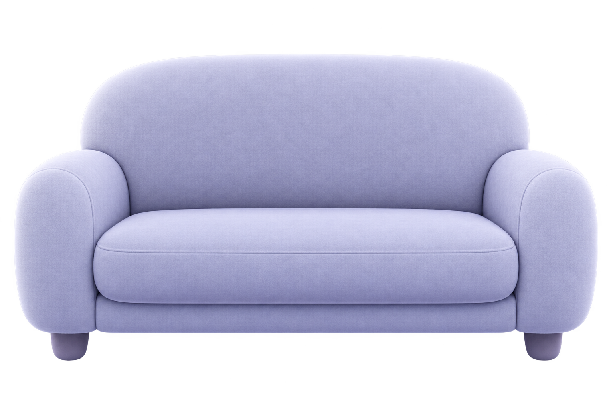
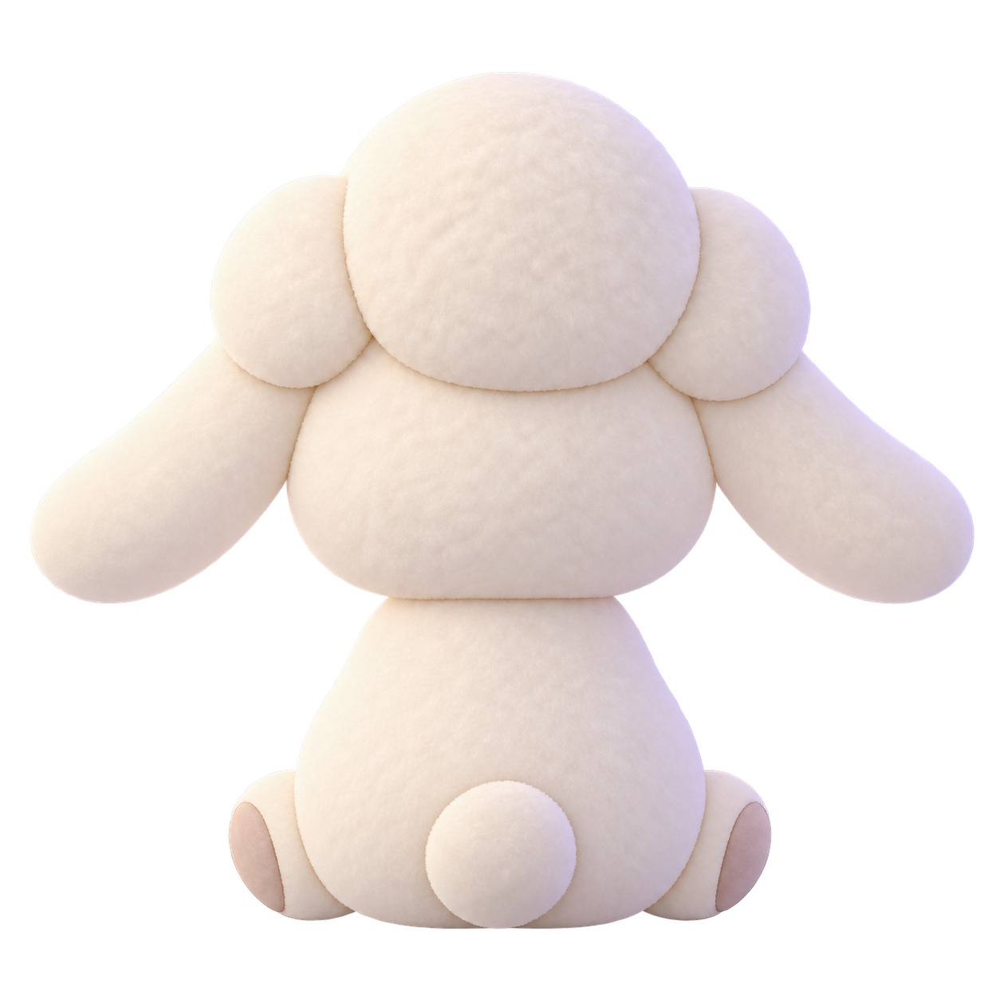
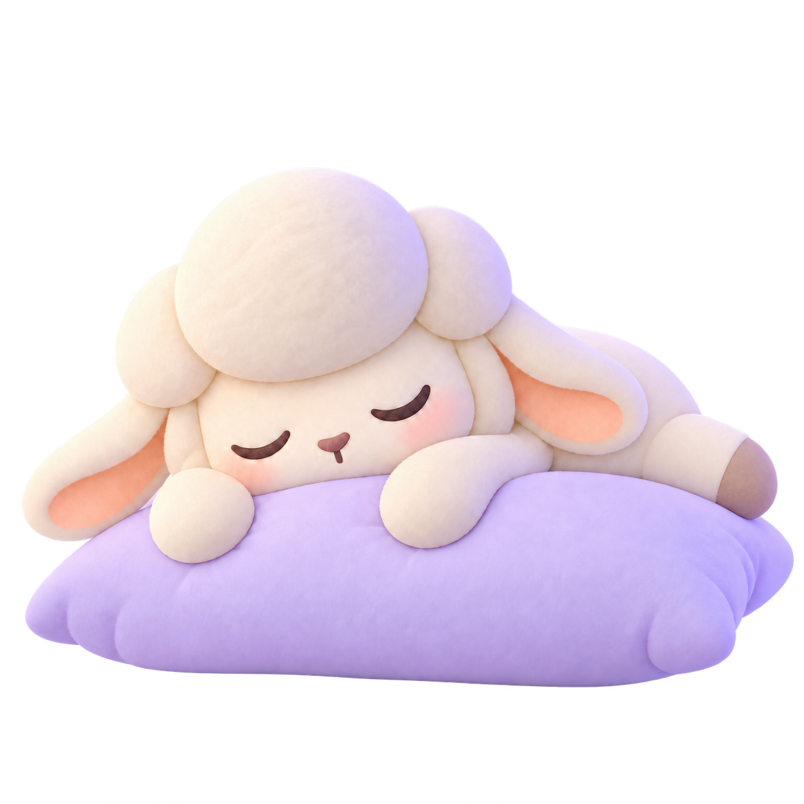

✦
Dreamie
陪你慢慢聊

我在听
今晚的心情，
可以慢慢说给我听。
Dreamie 正在静静等你开口
今天有点累
讲个小故事
理一理思绪
想和 Dreamie 说什么
Dreamie
粘贴你想看的链接
换个链接
↗
视频或播客链接
视频或播客链接
×
开始一起看
✦
✧

把世界的声音调轻一点。
‹
伙伴设置
自动保存
Dreamie
让陪伴，更像你喜欢的样子

用户名
这是 Dreamie 如何称呼你
小宝
›
AI 伙伴人设
Dreamie 的性格与陪伴方式
温柔治愈型
›
AI 伙伴音色
选择你喜欢的 Dreamie 声音
温暖治愈音
›
试听
你的偏好，会在下一次对话中生效。
×
保存选择